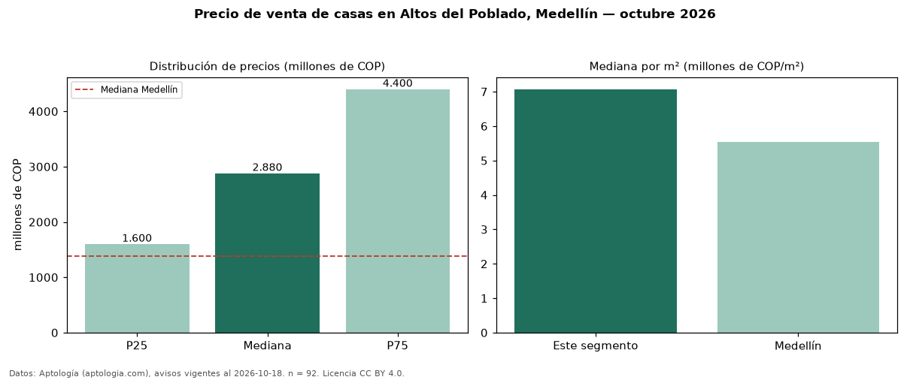

Precio de venta de casas en Altos del Poblado, Medellín — octubre 2026
En Altos del Poblado, Medellín, la mediana de precio de venta de casas es COP 2,88 mil millones, según 92 avisos vigentes. Eso es 107 % por encima de la mediana de Medellín para casas (COP 1,39 mil millones). Por metro cuadrado, la mediana es COP 7,07 millones/m² (n = 87 avisos con área), 28 % por encima de Medellín (COP 5,53 millones/m²). Por precio mediano es el puesto 6 de 39 barrios de Medellín con al menos 30 avisos de casas en venta (COP): entre las más caras. Con el precio por m² de arriendo del mismo segmento (COP 36.716/m² al mes), la rentabilidad bruta implícita es 6,2 % anual (aproximación con medianas de ofertas distintas). La mitad central de los avisos va de COP 1,60 mil millones a COP 4,40 mil millones (razón 2,8), una dispersión alta. El área mediana anunciada es 350 m². El segmento con más oferta es el de 3 o más habitaciones (92 avisos, mediana COP 2,88 mil millones). Datos: Aptología (aptologia.com), CC BY 4.0 — https://www.aptologia.com/casas-en-venta/medellin/altos-del-poblado. Archivos: PDF, CSV con las cifras y gráfica PNG.

| Avisos únicos | 92 |
|---|---|
| Percentil 25 | COP 1.600.000.000 |
| Mediana | COP 2.880.000.000 |
| Percentil 75 | COP 4.400.000.000 |
| Mediana por m² | COP 7.071.428 |
Fuente: avisos vigentes de portales inmobiliarios recopilados por Aptología, deduplicados (mínimo 30 avisos únicos por celda). Precios pedidos, no cerrados. Fecha: 2026-10-18.